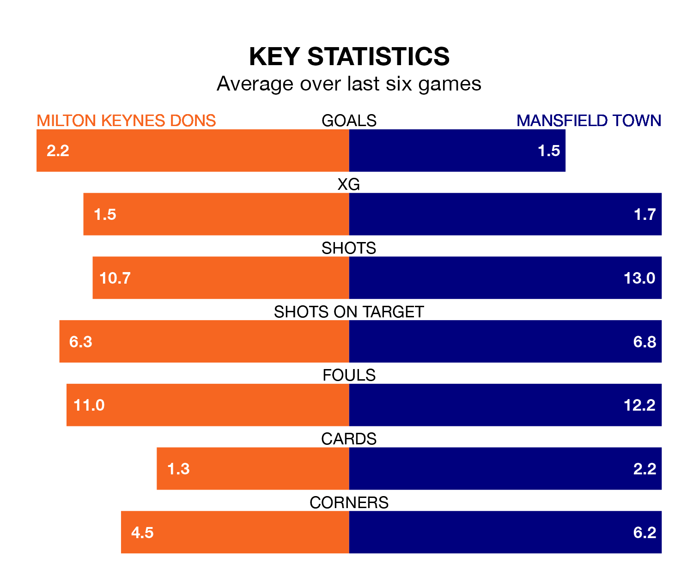

Two of EFL League Two's top sides face each other at Stadium mk in Saturday's kick-off, when fourth-placed Milton Keynes Dons host third-placed Mansfield Town.
Milton Keynes have picked up 22 wins and eight draws from 43 games so far this season, and sit two points below the visitors going into the 3pm match.
The Stags, meanwhile, have won 21 and drawn 13 of 42, picking up 76 points.
With 81 goals in 42 games so far this season, Mansfield are the league's third-highest scorers with 1.9 goals per game. And they are conceding fewer than average, letting in 43 goals at a rate of 1.0 per game.
Milton Keynes are also above average scorers, with 1.7 goals per game, compared to a league average of 1.5. They have conceded 1.3 goals per game.
In Christy Pym, Town can rely on one of the league's safest pair of hands. He has kept 14 clean sheets in his 42 appearances this season, and only two other 'keepers – Stockport County's Ben Hinchiffe and AFC Wimbledon's Alex Bass – have been able to prevent the opposition scoring on more occasions in EFL League Two.
In Dons' net, Craig MacGillivray has six clean sheets in 24 games. He has conceded a goal every 83 minutes, 10% more often than the 92 minutes between goals for Pym.
The Dons are in mixed form in EFL League Two, with three wins and a draw from their last six games.
With two wins and a draw over that period, the Stags' form is worse – they have taken seven points from 18, compared to the home side's 10.
Milton Keynes's last match was on April 6, a 2-0 win against Forest Green Rovers, with Alex Gilbey and Max Dean getting the goals for the Dons.
Mansfield beat Forest Green Rovers 1-0 last time out, on Tuesday, with Tom Nichols on the scoresheet.
Updated: 10:01 (UTC), 12/04/24